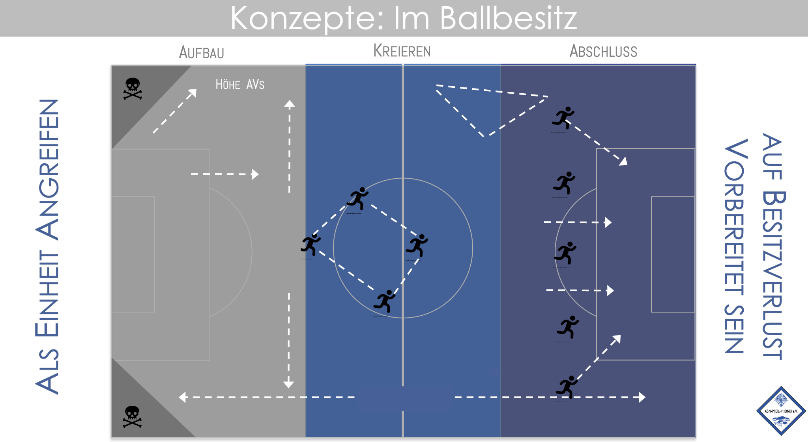

Höhe AVs
Diagonale Pässe
Nicht ohne Gegnerdruck Spielen
Breite Nutzen
TW nutzen um Überzahlsituationen im Aufbau zu erzeugen
Druck aufsaugen, um hinten Raum zu schaffen
Spielverlagerung nach Überladung
Max. 2 Spieler in derselben vertikalen Zone
Durch die Ketten spielen
Raute um den Ballträger
Scannen, Bewegung, Körperhaltung
Spiel über den Dritten
Ständige Bewegung zwischen den Ketten
Positionen rotieren
Tiefe Nutzen
Dreiecke in der Breite
Halbraum Flanken
Läufe in die Tiefe
Alle Bahnen Besetzen
Flanken zwischen Abwehrreihe und Torwart
Strafraumbesetzung
Ins 1gg1 kommen